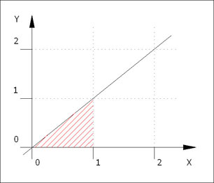
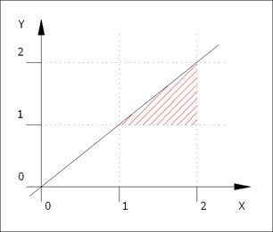
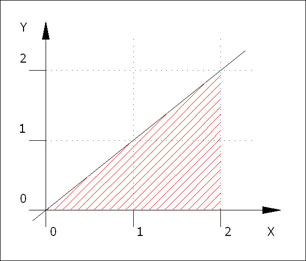
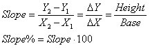
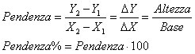

A bit of theory |
Calcolo della Pendenza |
Un po' di teoria |
|
Graphics representation:    To calculate the slope it is necessary to find a right triangle. In our case, we are able to find three possible triangles (outlined in red). It is easy to measure or calculate the height and the base. The ratio between the height and the base is the slope. |
Rappresentazione grafica: Per il calcolo della pendenza è necessario individuare un triangolo rettangolo. Nel nostro caso, sono stati individuati tre possibili triangoli (tratteggiati in rosso). Si può facilmente misurare o calcolare l'altezza e la base. Il rapporto altezza diviso base è la pendenza. |
|
|
Adopted formulas:  |
Scarica l'applet ed il relativo codice java (±4 KB) Download the applet and the Java code (±4 KB) |
Formule adottate:  |
|
How to use the web calculator: Enter the coordinates of the second point (end point) X2, Y2; enter the coordinates of the first point (start point) X1, Y1. To see the results click on the button <Calcola Pendenza>. Use the web calculator only to verify your calculations. Note The difference, between the ordinates (Y2-Y1), describes the height of the right triangle; the difference, between the abscissas (X2-X1), describes the base of the right triangle. The ratio between the height and the base is the slope. |
Come utilizzare la calcolatrice: digitare le coordinate del secondo punto (punto finale) X2, Y2 e del primo punto (punto iniziale) X1, Y1. Per vedere i risultati premere il pulsante <Calcola Pendenza>. Utilizzare la calcolatrice per verificare se i vostri conti sono esatti. Note La differenza delle ordinate (Y2-Y1) rappresenta l´altezza del triangolo rettangolo, la differenza delle ascisse (X2-X1) rappresenta la base del triangolo rettangolo. Il rapporto altezza diviso base è la pendenza cercata. |